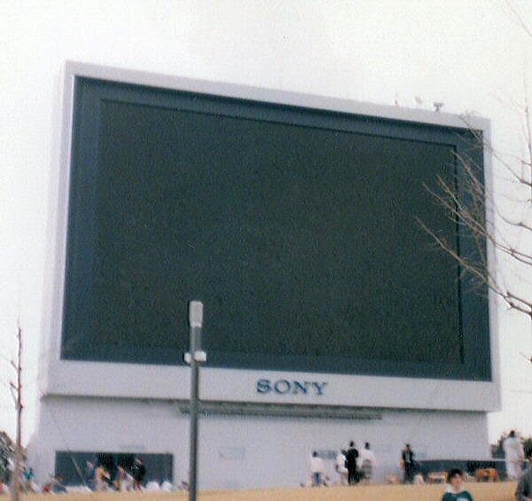

Sony JumboTron JTS-1
A stadium-sized video wall built from thousands of flood-beam CRT light bulbs — the first giant electronic screen, unveiled at Expo '85

Overview
The Sony JumboTron, introduced at Expo '85 in Tsukuba in May 1985, is the large-screen video wall that gave its name to the entire category of stadium screens. Its striking fact is what it was made of. The first JumboTrons were not LED displays — blue LEDs did not yet exist, and the only green LEDs available were an unsuitable yellow-green — nor were they projectors. They were built from tens of thousands of miniature flood-beam cathode-ray tubes. Each glass module contained 16 or more small CRTs, and each CRT carried from 2 to 16 pixels composed of red, green, and blue phosphors, individually addressable from a central control rack. The 1985 screen was a reported 40 by 25 metres with roughly 450,000 pixels, comparable in resolution to a standard-definition television of the day. Sony creative director Yasuo Kuroki — previously the Walkman — is credited with the JumboTron's development, and chief Betamax engineer Yuji Watanabe with the microprocessor-based "Trini-lite" light bulb that gave the screen its clarity and let it be computer-controlled.
Deep dive
The JumboTron is often mistaken for a projection screen; it was not. Every bright dot was emitted by a flood-beam CRT — a vacuum tube whose electron beam floods a phosphor patch rather than scanning a raster. The segmented glass modules, each holding sixteen or more tubes, made the display modular, serviceable, and explosively bright, but also heavy, hot, and fragile. The "pixel" was a physical light bulb.
The interface problem the JumboTron solves is not pixel density but collective legibility: a screen forty metres wide is designed to be read from the far side of a stadium or public square, making one image perceivable by thousands of people at once. It is the museum's archetypal public, outdoor, shared output device — the opposite of the private personal computer.
CRT-based JumboTrons had roughly one-tenth the lifespan of the LED screens that replaced them, and needed constant lamp and module servicing. Yet for nearly twenty years the flood-beam CRT wall was the only practical way to build a giant outdoor video screen. In December 1986 the San Antonio Spurs installed the first indoor arena JumboTron at HemisFair Arena, and the technology spread across sports and concert venues before LED supplanted it. No verifiable unit price for the 1985 Expo '85 display could be confirmed.
Team & pioneers
- Sony Corporation. Tokyo electronics manufacturer; introduced the JumboTron at Expo '85 and registered the "JumboTron" trademark in 1985.
- Yasuo Kuroki. Sony creative director, previously of the Walkman; credited with the JumboTron's development.
- Yuji Watanabe. Chief Betamax engineer; developed the microprocessor-based Trini-lite light bulb.
Media
Sources
- Wikipedia — Jumbotron (history, Trini-lite flood-beam CRT modules, 450,000-pixel resolution, Expo '85 debut, Kuroki and Watanabe, Spurs 1986)
- SB Nation — "Twilight of the Jumbotron, the biggest invention in sports" (Mary Pilon, 11 Nov 2015)
- Popular Science, "Science Newsfront" (May 1985)
- Lamps & Tubes — "Futaba/Sony (TRINILITE) A-6279-869-B Flood Beam CRT Jumbotron Module"